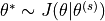
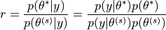
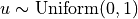
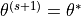
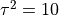
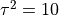
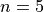
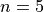
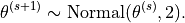

17. Markov Chain Monte Carlo¶
Chinese proverb
A book is known in time of need.
Monte Carlo simulations are just a way of estimating a fixed parameter by repeatedly generating random numbers. More details can be found at A Zero Math Introduction to Markov Chain Monte Carlo Methods.
Markov Chain Monte Carlo (MCMC) methods are used to approximate the posterior distribution of a parameter of interest by random sampling in a probabilistic space. More details can be found at A Zero Math Introduction to Markov Chain Monte Carlo Methods.
The following theory and demo are from Dr. Rebecca C. Steorts’s Intro to Markov Chain Monte Carlo. More details can be found at Dr. Rebecca C. Steorts’s STA 360/601: Bayesian Methods and Modern Statistics class at Duke.
17.1. Metropolis algorithm¶
The Metropolis algorithm takes three main steps:
Sample 
Compute the acceptance ratio


Let
(1)¶

Note
Actually, the (1) in Step 3 can be replaced by sampling  and setting  if  and setting
and setting  otherwise.
otherwise.
17.2. A Toy Example of Metropolis¶
The following example is going to test out the Metropolis algorithm for the conjugate Normal-Normal model with a known variance situation.

 is
is  , where
, where

17.2.2. Example setup¶
The rest of the parameters are  , ,
, ,  ,  and
,  and
![y = [9.37, 10.18, 9.16, 11.60, 10.33]](_images/math/f17bcfc9d73ecca98488ee11d7adf6d1f8614916.png)
For this setup, we get that  and
and  .
.
17.2.3. Essential mathematical derivation¶
In the Metropolis algorithm, we need to compute the acceptance ratio  , i.e.
, i.e.

In many cases, computing the ratio directly can be numerically unstable, however, this can be modified by taking  . i.e.
. i.e.
![logr &= \sum_i \left(log[\text{dnorm}(x_i,\theta^*,\sigma)] - log[\text{dnorm}(x_i, \theta^{(s)}, \sigma)]\right)\\
&+ \sum_i \left(log[\text{dnorm}(\theta^*,\mu,\tau)] - log[\text{dnorm}(\theta^{(s)}, \mu,\tau)]\right)](_images/math/38e88b9f0930912a478adb7ee9ce2d44afbe54de.png)
Then the criteria of the acceptance becomes: if  , where
, where  is sample form the
is sample form the  .
.
17.3. Demos¶
Now, We generate  iterations of the Metropolis algorithm starting at
iterations of the Metropolis algorithm starting at  and using a normal proposal distribution, where
and using a normal proposal distribution, where

17.3.1. R results¶
# setting values
set.seed(1)
s2<-1
t2<-10
mu<-5; n<-5
# rounding the rnorm to 2 decimal places
y<-round(rnorm(n,10,1),2)
# mean of the normal posterior
mu.n<-( mean(y)*n/s2 + mu/t2 )/( n/s2+1/t2)
# variance of the normal posterior
t2.n<-1/(n/s2+1/t2)
# defining the data
y<-c(9.37, 10.18, 9.16, 11.60, 10.33)
####metropolis part####
##S = total num of simulations
theta<-0 ; delta<-2 ; S<-10000 ; THETA<-NULL ; set.seed(1)
for(s in 1:S){
## simulating our proposal
#the new value of theta
#print(theta)
theta.star<-rnorm(1,theta,sqrt(delta))
##taking the log of the ratio r
log.r<-( sum(dnorm(y,theta.star,sqrt(s2),log=TRUE))+
dnorm(theta.star,mu,sqrt(t2),log=TRUE))-
( sum(dnorm(y,theta,sqrt(s2),log=TRUE))+
dnorm(theta,mu,sqrt(t2),log=TRUE))
#print(log.r)
if(log(runif(1))<log.r) { theta<-theta.star }
##updating THETA
#print(log(runif(1)))
THETA<-c(THETA,theta)
}
##two plots: trace of theta and comparing the empirical distribution
##of simulated values to the true posterior
par(mar=c(3,3,1,1),mgp=c(1.75,.75,0))
par(mfrow=c(1,2))
# creating a sequence
skeep<-seq(10,S,by=10)
# making a trace place
plot(skeep,THETA[skeep],type="l",
xlab="iteration",ylab=expression(theta))
# making a histogram
hist(THETA[-(1:50)],prob=TRUE,main="",
xlab=expression(theta),ylab="density")
th<-seq(min(THETA),max(THETA),length=100)
lines(th,dnorm(th,mu.n,sqrt(t2.n)) )
Histogram for the Metropolis algorithm with r
Figure. Histogram for the Metropolis algorithm with r shows a trace plot for this run as well as a histogram for the Metropolis algorithm compared with a draw from the true normal density.
17.3.2. Python results¶
# coding: utf-8
# In[1]:
import numpy as np
# In[2]:
from scipy.stats import norm
def rnorm(n,mean,sd):
"""
same functions as rnorm in r
r: rnorm(n, mean=0, sd=1)
py: rvs(loc=0, scale=1, size=1, random_state=None)
"""
return norm.rvs(loc=mean,scale=sd,size=n)
def dnorm(x,mean,sd, log=False):
"""
same functions as dnorm in r
dnorm(x, mean=0, sd=1, log=FALSE)
pdf(x, loc=0, scale=1)
"""
if log:
return np.log(norm.pdf(x=x,loc=mean,scale=sd))
else:
return norm.pdf(x=x,loc=mean,scale=sd)
def runif(n,min=0, max=1):
"""
r: runif(n, min = 0, max = 1)
py: random.uniform(low=0.0, high=1.0, size=None)
"""
return np.random.uniform(min,max,size=n)
# In[3]:
s2 = 1
t2 = 10
mu = 5
n = 5
# In[4]:
y = rnorm(n,10,1)
y
# In[5]:
# mean of the normal posterior
mu_n = (np.mean(y)*n/s2 + mu/float(t2))/(n/float(s2)+1/float(t2))
mu_n
# In[6]:
# variance of the normal posterior
# t2.n<-1/(n/s2+1/t2)
t2_n = 1.0/(n/float(s2)+1.0/t2)
t2_n
# In[7]:
# defining the data
# y<-c(9.37, 10.18, 9.16, 11.60, 10.33)
y = [9.37, 10.18, 9.16, 11.60, 10.33]
# In[8]:
mu_n = (np.mean(y)*n/s2 + mu/float(t2))/(n/float(s2)+1/float(t2))
mu_n
# In[9]:
####metropolis part####
##S = total num of simulations
# theta<-0 ; delta<-2 ; S<-10000 ; THETA<-NULL ; set.seed(1)
theta = 0
delta = 2
S = 10000
theta_v = []
# In[ ]:
for s in range(S):
theta_star = norm.rvs(theta,np.sqrt(delta),1)
logr = (sum(dnorm(y,theta_star,np.sqrt(s2),log=True)) +
sum(dnorm(theta_star,mu,np.sqrt(t2),log=True)))-
(sum(dnorm(y,theta,np.sqrt(s2),log=True)) +
sum(dnorm([theta],mu,np.sqrt(t2),log=True)))
#print(logr)
if np.log(runif(1))<logr:
theta = theta_star
#print(theta)
theta_v.append(theta)
# In[ ]:
import matplotlib.mlab as mlab
import matplotlib.pyplot as plt
plt.figure(figsize=(20, 8))
plt.subplot(1, 2, 1)
plt.plot(theta_v,'b-.')
plt.subplot(1, 2, 2)
#bins = np.arange(0, S, 10)
plt.hist(theta_v, density=True,bins='auto')
x = np.linspace(min(theta_v),max(theta_v),100)
y = norm.pdf(x,mu_n,np.sqrt(t2_n))
plt.plot(x,y,'y-.')
plt.xlim(right=12) # adjust the right leaving left unchanged
plt.xlim(left=8) # adjust the left leaving right unchanged
plt.show()
# In[ ]:
Histogram for the Metropolis algorithm with python
Figure. Histogram for the Metropolis algorithm with python shows a trace plot for this run as well as a histogram for the Metropolis algorithm compared with a draw from the true normal density.
17.3.3. PySpark results¶
TODO…
Histogram for the Metropolis algorithm with PySpark
Figure. Histogram for the Metropolis algorithm with PySpark shows a trace plot for this run as well as a histogram for the Metropolis algorithm compared with a draw from the true normal density.